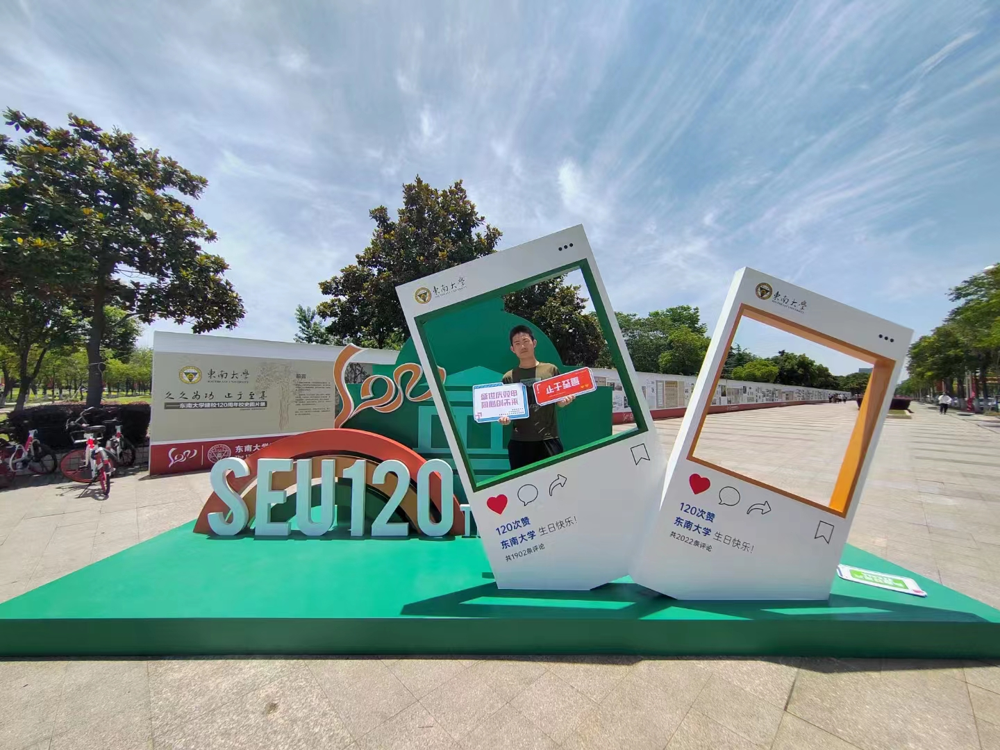

Brief Biography
-
His major is mathematics.
Since he's known that AI research requests strong mathematical and analytical skills, he chooses mathematics
as his major. Besides learning mathematics, he's been working on programming out of his AI engineer dream.
Latest News
- [2023-01-01] Pengfei Song, Luoyu MEI, Han Cheng, "Human Semantic Segmentation using millimeter wave radar point clouds", IEEE CSCWD,(CCF C),2023. Accepted.
Research Interests
- Temporal-topological point cloud
- Big data analysis, neural network analysis
- Novel applications in millimeter wave radar point cloud
Academic Projects Involved
- 2021.06-2022.10: 基于毫米波雷达稀疏点云的人体语义分割
东南大学，校级SRTP项目，项目参与
Awards
- 2022: 东南大学"至善学子奖学金"(2021-2022学年)
- 2022: 国家留学基金委“创新人才培养项目”赴UC Berkeley交流
- 2022: 美国大学生数学建模竞赛(2022年)H奖
- 2021: 第十三届全国大学生数学竞赛江苏赛区一等奖
- 2021: 东南大学"至善学子奖学金"(2020-2021学年)
- 2021: 东南大学物理实验论文竞赛一等奖
Quote
-
"In my experience, most stuff that you start is mediocre for a really long time before it actually gets good. And you can't tell if it's going to be good until you're really late in the process. So the only thing you can do is have faith that if you do enough stuff, something will turn out great and really surprise you."
--- Ira Glass:
The Wrong Stuff
-
"A computer program is said to learn from experience E with respect to some task T and some performance measure P, if its performance on T, as measured by P, improves with experience E."
--- Tom Mitchell, Carnegie Mellon University
Conference Papers
- Pengfei Song, Luoyu MEI, Han Cheng, "Human Semantic Segmentation using millimeter wave radar point clouds", IEEE CSCWD,(CCF C),2023. Accepted.
Journal Papers
- To be achieved
Education
- 2020.09 - present: Student, Southeast University of China
School of Mathematics
- 2022.08 - 2022.12: Visiting Student, UC Berkeley
Project Skills
- Latex:
- Paper Writing: One paper accepted
- Python:
- PyTorch: Design Computer Vision Models
- MATLAB:
- Data Processing: Read, process and save data to .hdf5, .txt, .mat
- PR:
- Editing Videos as bilibili UP: Link
Project Experiences
- 2021.06 - 2022.08: Sparse Cloud Segmentation on Milimeterwave Radar Data
English Standardized Tests
CET-4 602, CET-6 520
Volunteer Experiences
- 2022.04 - 2022.06: 东南大学120周年校庆志愿者(Vlounteer, 120th anniversary of Southeast University)
- 2022.07 - 2022.08: 2022年东南大学暑期招生宣传志愿者
- 2021.10.15: 东南大学数学学院百年院庆志愿者
- 2021.07 - 2021.08: 2021年东南大学暑期招生宣传志愿者
-

Services
- 2020.09 - 2021.10: Class Monitor
Social Relations
- 2021.10: 校重大，赴苏州管廊总公司社会实践(Social Practice in Suzhou Underground Pipe Gallery Company)
-
- 2021.08: 三下乡，赴山东寿光蔬菜生产基地社会实践(Social Practice in Shandong Vegetable Producing Farm)
-
Journal and Conference Ranking
Research Guide
- You and Your Research, Transcription of the Bell Communications Research Colloquium Seminar, by Richard Hamming.
- Guideline for Researchers, by Kris Pister.
- "5C" law for doing research - Critical, Consistent, Concise, Clear, Complete, by Helai Huang.
- How to Write a Survey Paper, by Jennifer Wong.
- Tips about How to Do Research, by Silvia Miksch, Vienna University of Technology.
Paper Reading
Paper Writing
- Editor's note: How to write research articles in computing and engineering disciplines, Ivan Stojmenovic, Veljko Milutinovic.
- Slides: How to write a great research paper, by Simon L. Peyton Jones, John Hughes, and John Launchbury, University of Glasgow, Scotland.
- Twenty-eight tips for research writing, by Neal Patwari.
- Three sins of authors in computer science and math, by Jonathan Shewchuk.
- How to get your papers accepted, by Matt Welsh.
- 写好英语科技论文的诀窍：主动迎合读者期望，预先回答专家可能质疑, by 周耀旗.
- The Elements of Style, by William Strunk Jr. and Elwyn Brooks White.
Giving a Talk
- Giving technical talks, by Scot Drysdale.
- Seven Steps to Better Presentations, by Jeffrey Veen.
- Slides: How to give a great research talk, by Simon L. Peyton Jones, John Hughes, and John Launchbury, University of Glasgow, Scotland.
- How to Present a Paper in Theoretical Computer Science: A Speaker's Guide for Students, by Ian Parberry, Department of Computer Sciences, University of North Texas, USA.
- How to make presentations: techniques, handouts, display technologies, by Edward Tufte.
Poster Design
- Guidelines / Tipps to Design Posters: [1][2][3]
- Posters Advices:
[1]
[2]
[3]
[4]
[5]
[6]
[7]
[8]
[9]
- Examples of Posters: [1]
[2]
[3]
Project 0: Game 2048
- 2022.09.10 - 2022.09.20: By the idea of task decomposition, a tile can possibly merge with another tile which earns the player points.

Project 1: Percolation Simulation.
- 2022.10.07 - 2022.10.18: Build ‘Percolation’ data type with help of WeightedQuickUnionUF class.

Project 2: WordNet.
- 2022.10.22 - 2022.11.14: A series of Java packages is written for existing word data analysis. A html WordNet viewer is created.
Project 3: Pick Up Flowers.
- 2022.11.18 - 2022.12.7: Build our own maze-exploring world out of several self-built classes.
[3]
|